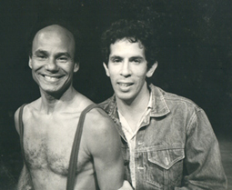
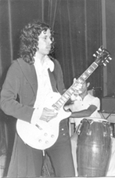
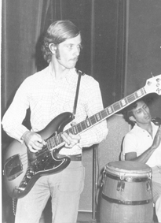

Ozono Jazz | TintaChina | Akurima | Guama Eléctrica | Axis Jazz | La Comarca | Mobius | Little Venice | Kei Yumei | A. M. Fernaud Ensamble | Balle Coreoarte | J. Limón Dance Co. | ODILA | R. O. Okonfo | G. Becker Ensamble für Neue Musik | PAC | Trio | Catálysis | Spitzlowa Band |
Ozono Jazz Para más información, ver web: www.ozonojazz.com
(01/2005 - actual)
San Antonio de los Altos, Venezuela
Música ecológica, piezas originales de E. Mendoza

TintaChina
(07/2003 - 03/2004)
San Antonio de los Altos, Venezuela
Música Indeleble: Bossas, Boleros, Beatles y Criollas (Arreglos: TintaChina)


MP3:
Corcovado (A.
C. Jobim) - Ana María, voz
Pajarillo
Verde (trad. ven.) - Eva, voz
Integrantes:
Emilio Mendoza
Guitarra, Dirección
Ike
Lizardo
Bajo eléctrico
Ana María Reverón Voz
Eva Uzcátegui
Voz
Iván Rivas
Percusión
Richard Díaz
Batería
Invitados Especiales:
Francisco Isaa Sax
Alto & Tenor
Principales
Presentaciones:
- Polo Restaurant Club de Polo, Club de Campo, San Antonio de los Altos (grupo estable)
- Evio's Pizzería, Caracas
- Universidad Simón Bolívar, Auditorios Múltiples, Caracas
- Bar Tasca de Roque, San Antonio de los Altos, 15/11/2003
- Este grupo tuvo una actividad muy intensa de conciertos, fiestas y eventos
Akurima (Para más información: Akurima)
(09/2002 - 05/2003, pero con dos actuaciones para el disco en 06 y 08/2005)
San Antonio de los Altos, Venezuela
Jazz de los Altos, piezas originales de E. Mendoza, Xavier Sobrevila y Wladimir Pérez

MP3:
Sólo un Mes
(E. Mendoza) (re-grabada con el baterista del grupo
sanantoñero HoraCero, Pancho Montañez)
Giros
(E. Mendoza, segmento del solo abandoleao)
Nenengue (X.
Sobrevila, segmento con solo de bajo y solo de guitarra)
Integrantes:
Emilio
Mendoza
Guitarra
Eléctrica, Acústica
Javier
Sobrevila
Saxofón
Soprano/Tenor
Carlos Wladimir Pérez Bajo
Eléctrico, Guitarra Acústica
Richard
Díaz
Batería
(hasta
2003)
Iván
Rivas
Percusión
Invitados especiales:
Iván Puchi
"Picky"
Percusión
Ulises
Farías
Tabla
José Ramón
Navarro
Percusión
Principales
Presentaciones:
- Ciclo "Expresiones Musicales," (Prod. J. Braunstein), Celarg, Altamira, Caracas, 23/08/2005.
- Bautizo del CD, Restaurante Garní, La Casona I, San Antonio de los Altos, 18/6/2005.
- Ciclo "Descargas en el CVA," (Prod. J. Braunstein), Centro Venezolano Americano, Las Mercedes, Caracas, 19/5/2003.
- Bar Tasca de Roque, San Antonio de los Altos, 28/3/2003, 7/5/2005.
Bajo un Cielo Toronjil, San Antonio: Bys Music C.A., 2005.
Guama Eléctrica
(05/2002 - 04/2004)
San Antonio de los Altos, Venezuela
Folklore venezolano experimental con instrumentos amplificados
Integrantes:
Emilio Mendoza Bandola Eléctrica (Gordation)/Guitarra nylon
Elías Torres Cuatro Eléctrico (Gordation)
Gerardo Osal Guitarra/Tres amplificados
Principales Presentaciones
-
• Programa de Televisión "Creadores" para Vive TV,
Caracas.
• Fiestas varias
Axis Jazz
(07/2001 - 03/2002)
San Antonio de los Altos, Venezuela
Piezas originales y repertorio de standars de Jazz

MP3: Stella by Starlight (V. Young)
Integrantes:
Xavier
Sobrevila
Saxos
tenor y soprano
Emilio
Mendoza
Guitarra
eléctrica
Carlos Wladimir
Pérez Bajo eléctrico
Marco
Núñez
Batería
Principales Presentaciones:
- Concierto "Nueve Nuevas," SEMIC, San Antonio de los Altos, 2/3/2002, junto al canta-autor PTT.
- Manzione Café, San Antonio de los Altos, 15/2 – 8//3/2002
- Bar Tasca de Roque, San Antonio de los Altos, 1/2/2002.
- Jingo Sushi Bar, San Antonio de los Altos (grupo estable), + presentaciones con cantantes invitadas: Ma. Antonia Mujica, Ana María Reverón, Rebecca Boswell, 07/2001 - 03/2002.
(03/1999 - 12/2000)
San Antonio de los Altos, Venezuela
Piezas originales y repertorio de standars de Jazz
MP3: Chega de Saudade (A. C. Jobim)
Integrantes:
Gilberto
Márquez
Flauta
Traversa en Do
Emilio
Mendoza
Guitarra
Eléctrica
Carlos Wladimir
Pérez Bajo Eléctrico
Iván Puchi "Picky"
Batería
Principales Presentaciones:
- C.C. Don Pedro, Carrizales, edo. Miranda, 14/10/2000.
- Instituto Universitario Tecnológico IUT, Carretera Panamericana, edo. Miranda, 28/7/2000.
- Club Bosque Alto, San Antonio de los Altos 20/5/2000.
- Restaurante Los Sanabrias, La Morita, San Antonio de los Altos (grupo estable), 15/2 – 29/3/2000.
Mobius
(04/1992 - 08/1994)
Potsdam, NY, EUA
Piezas originales Jazz
Integrantes:
Emilio Mendoza Guitarra, voz, dirección
Walter xxxx Bajo eléctrico
Phillip Neisser Batería
Eric xxxxx Congas
Conciertos en el college, en fiestas privadas y festejos de la comunidad.
Little Venice
(1988-1991)
Washington, D.C., EUA
Folklore venezolano experimental con arpa y bandola
Integrantes:
Emilio Mendoza Bandola, cuatro, guitarra, maracas, dirección
Jorge Díaz Arpa, cuatro
Ramón xxx Bajo eléctrico
Presentaciones en fiestas, en teatros al aire libre, en la Embajada de Venezuela y en el Smithsonian Institute.
Kei Yumei
(1983-1986)
Caracas, Venezuela
La Voz del Canto Latinoamericano
Folklore latinoamericano (arrg. Alfredo Rugeles) y composiciones propias

Director: Alfredo Rugeles, más cinco músicos adicionales.
Mendoza ejecutaba: Bandola Llanera, Guitarra, Cuatro, Seis, Tiple, Percusión.
Incontables presentaciones en teatros de Venezuela.
Ana María Fernaud Ensamble
(11/1985 - 09/1986)
Canciones Sefarditas y Judías
Caracas, Venezuela
Integrantes:
Ana María Fernaud Soprano
Emilio Mendoza Guitarra, arreglos
Domingo Sánchez Bor Violoncello
Pedrito Eustache Flauta
Rafael Galindo Oboe
Muchas presentaciones en teatros de Venezuela.
Ballet Coreoarte
(05/1983 - 07/1987)
Música original grabada para la compañía de danza contemporánea, improvisaciones experimentales en vivo, con coreografías de Carlos Orta. Dirección: Noris Ugueto
Caracas, Venezuela

MP3: El Ultimo Canto - Extrañez (E. Mendoza)
MP: Tregua (E. Mendoza)
José Limón Dance Company
(18-28/06/1984)
Música original grabada para la compañía de danza contemporánea, con coreografías de Carlos Orta, trabajando como artista invitado por la compañía en el marco de la International Choreographic Residency, Skidmore College, Saratoga, NY, EUA.

MP3: El Ultimo Canto - Memorias (Bandola solo, E. Mendoza)
ODILA - Orquesta de Instrumentos Latinoamericanos
(01/1982 - 07/1987)
Caracas, Venezuela
Música tradicional latinoamericana y música experimental con instrumentos afro, indígena y mestizos de Latinoamérica,
con auspicios del CONAC, ONJV, FUNDEF.
MP3: Etnocidio
Integrantes (entre/hasta 1982-1987):
Emilio Mendoza Dirección, bandola llanera, guitarra, percusión, voz
Israel Girón Sudirección, marimba, percusión, voz
Lizardo Domínguez Maracas, percusión
Randy Arriechi Cuatro, voz, percusión
Arturo García Arpa Central
Daniel Gil Cuatro, voz, percusión
Alexander Paredes Bandola, Cuatro, voz
Lester Paredes Cuatro, voz, percusión
Orlando Paredes Guitarra, voz, percusión
Aquiles Báez Cuatro, percusión
Taumanova Alvarez Cuatro, percusión, voz
Wladimir "Corroncho" Percusión
Omar Oliveros Congas, percusión
Rafael Galindo Quenas, Zampoñas, Tarkas
Carlos Cruz Mina, percusión
Orlando Poleo Congas, percusión
Cara 'e Merengue Arpa llanera, cuatro
Tundra Palo de Lluvia
Giras de conciertos por Venezuela, Canadá, Puerto Rico, presentaciones en televisión, videos experimentales (Munich),
L.P. publicado en Caracas: Odila - Entre lo tradicional y lo contemporáneo
Rashid Omoniyi Okonfo - Afrikanische Rituale
(09/1979 - 08/1981)
Düsseldorf, Alemania
Música africana occidental de curación (Ghana)
Integrantes:
Rashid Omoniyi Okonfo Priester, voz, danza, sanación, dirección
Emilio Mendoza Tambores, campanas
Cinco personas más, entre músicos y bailarines (no recuerdo sus nombres)
Presentaciones privadas de sanación con el curandero africano Priester Omoniyi.
Günther Becker's Ensemble für Neue Musik
(05/1977 - 09/1977)
Düsseldorf, Alemania
Música contemporánea instrumental con Live-Electronics
Integrantes:
Günther Becker Dirección
Alfredo Rugeles, Alfredo Marcano, Emilio Mendoza, Ramón Ramos, Paco Estévez, Raimond Jüllich, Michael Feller, entre otros, instrumentos reales y sintetizadores.
Presentaciones:
- ISCM WMD Festival, Bonn, 1977
- Concierto de la Sociedad Helénica de Música Contemporánea, Herodes Atticus, Atenas, 1977.
Pequeña Agrupación de Cámara (PAC)
(09/1974 - 05/1976)
Caracas, Venezuela
Música barroca de cámara (G. F. Händel, J. S. Bach, entre otros)
Integrantes:
Juan Francisco Sans Flauta Dulce
Juan Andrés Sans Guitarra
Emilio Mendoza Guitarra
Paul Desenne Violoncello
Conciertos en escuelas (Liceo Champagnat, Escuela Comunitaria)
Trio de Guitarras J. M. Olivares
(09/1973 - 07/1974)
Caracas, Venezuela
Arreglos de música popular y académica.
Alfredo Rugeles
Mercedes Otero
Emilio Mendoza
Catálysis
(08/1972 - 12/1974)
San Antonio de los Altos, Venezuela
Piezas de rock/jazz sinfónico originales
 

Integrantes:
Emilio Mendoza Guitarra eléctrica, dirección
Giovanni DiBartolomeo Teclados
Victor Suárez Bajo eléctrico
Manuel Batería
César Monroy Congas
Principales Presentaciones:
- Casa de Cultura, Los Teques, edo. Miranda, 12/1972
- Liceo San José,
Los Teques, 1973, junto a Henrique Lazo y
Apocalipsis (luego "La Misma Gente")
(Existe una filmación de este concierto en 16mm (ahora en DVD) sin sonido.) - Feria de la Virgen de Fátima, Los Teques, 1974
- Show de Richard Herr, TV Canal 2, Caracas, 1974
Spitzlowa Band
(10/1968 - 05/1972)
Londres, Inglaterra
Piezas originales de rock/folk de E. Mendoza
Integrantes
Emilio Mendoza Guitarra eléctrica, dirección
Karl Forman Bajo eléctrico
Kevin Saunders Batería
Presentaciones en fiestas y clubs pequeños del norte de Londres.